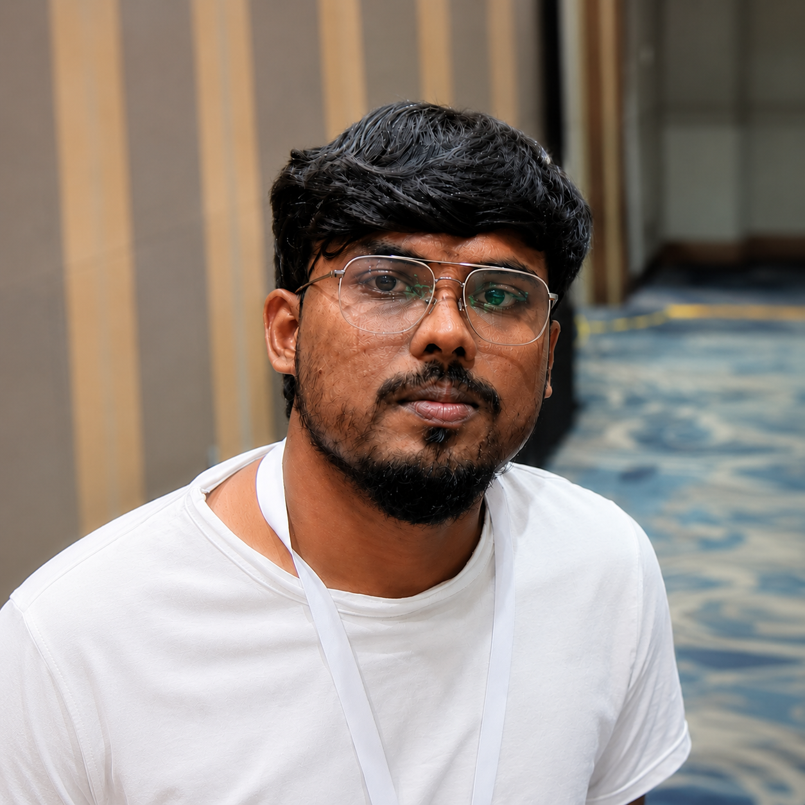

PDF
Systems / Automation / AI agents / People
I design systems that make complex work feel inevitable.
Engineering leader focused on production automation, dependable AI agents, document platforms, and high-performing teams.

Ideas
to systems
to systems
Agents
to action
to action
People
to impact
to impact
Engineering lead / systems / AI / automation
~70%manual support workload reduced
Systemsfrom prototype to production
2×targeted pipeline performance
Technical leadershipacross the stack
Selected systems
Real problems. Working systems.
Production AI · Proprietary
Support Agent
A bounded-autonomy workflow for production failures—detection, isolated reproduction, diagnosis, controlled remediation, validation, and human escalation.
- Agents
- Guardrails
- Evaluation
- Automation
Architecture summarized without customer-sensitive details.
Document engine · Experimental
monoref
A LuaLaTeX hold-and-patch engine for resolving bounded references, citations, page totals, and generated contents in one run.
- LuaLaTeX
- Shipout
- Cross-references
Career trajectory
From foundations to larger impact.
Operations → technical ownership
Structured-content operations, automation, LaTeX systems, team leadership, and workflow standards at Integra and Lapiz.
Software Engineer · TNQTech
NeoPage platform engineering, backend services, complex pagination, PDF validation, and performance work.
Engineering Lead · TNQTech
Architecture, autonomous support systems, platform reliability, technical leadership, prototyping, and release enablement.
Working toolkit
PythonNode.jsFastAPIDockerLinuxAI agentsLuaTeXPDFXMLArchitecture
Next chapter
Let’s build something useful.
Open to conversations about dependable systems, production automation, AI agents, and technical leadership.